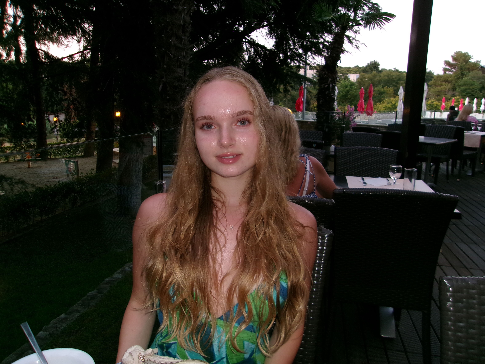
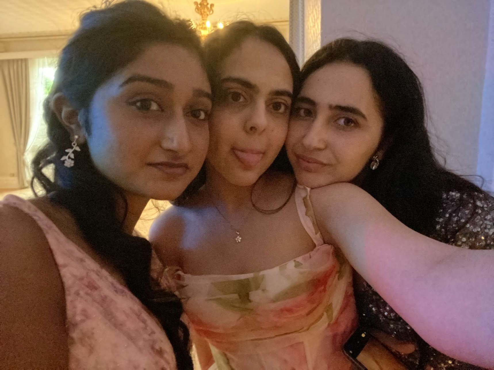

About us
My name is Kateryna Diachuk and I am 17 years old Ukrainian. I love traveling and discovering new skills to learn. One thing I learned this summer was how to code websites,this webiste is my first work with my wonderful team. I hope you enjoy our website and learn something new.
My name is Leyla El isbihani and I am a 16 years old Moroccan. I like learning new things! One thing I discovered this summer is that I love to code. JustTravelers is the first website I'm coding with my amazing team, and I couldn't be more grateful. Can't wait to see what we can do next!
My name is Miya Nagra, I'm 16 and from the UK. I have thoroughly enjoyed working with my final project group and seeing our website JustTravelrs come to life!! I'm so grateful to have had the oppourtunity to learn how to code websites and work with such incredible girls <3.
Hi! My name is Zainab Oumghari and I am a 16 years old Moroccan. I am always passionate about exploring new concepts regarding any sector of interests.JustTravelers marks my first ever project in web development which I am crafting with my Stellar team 💕 ! Kudos to my dedicated teammates for their outstanding work ! Last but not least, I am looking forward to future projects beyond this one.
I am Ziena Mohamed, and I am a 16-year-old Egyptian girl. "In a world full of spectacular things to do and to love, why do I have to limit myself to doing one thing?". This is a quote that I genuinely believe in and that drives me in all aspects of my personality. I think that coding and programming take apart from me and JustTravelers is the first website that I had done with my lovely team